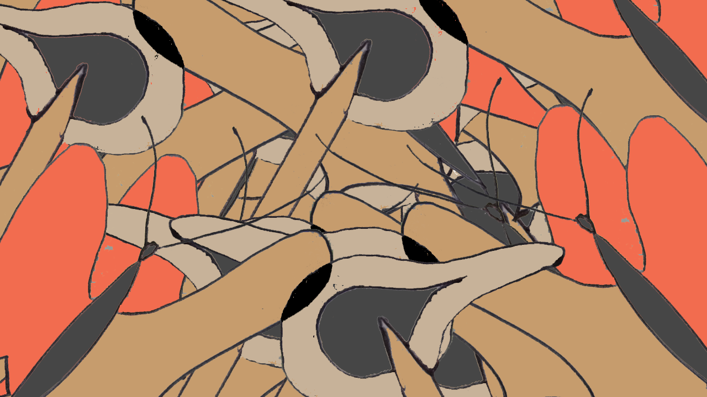
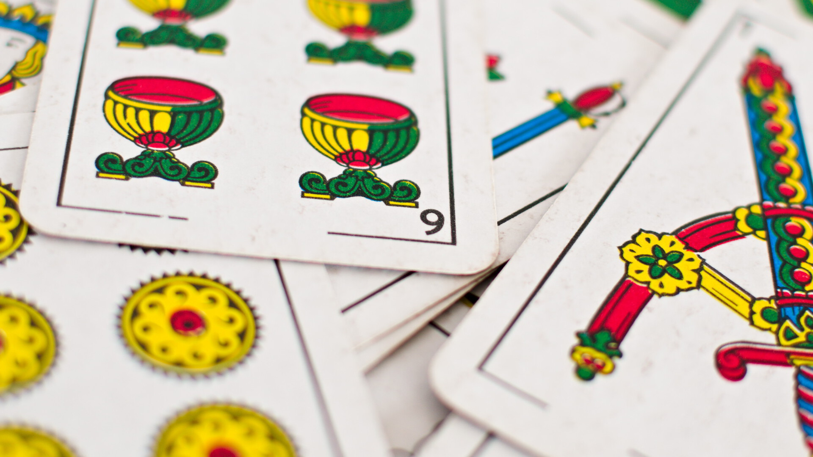
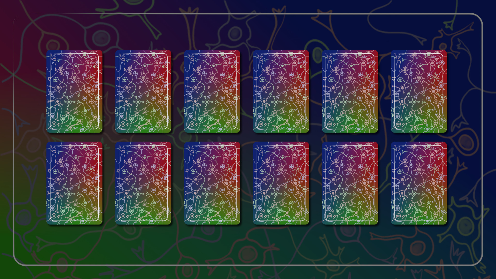

la mariposa y el caos
El encordado de un piano de cola es el tablero del juego. Juegan 3 personas con 13 pelotas de ping pong. Mientras 2 jugadores intentan expulsar las pelotas del tablero tocando en el teclado el otro intenta que el tablero no quede vacío.
Mezcla coral
Un crupier mezcla una baraja española y le reparte cartas a un coro de jugadores.
Los jugadores nunca sueltan su carta, la usan para saber qué palabra decir hasta que se les acaba el aire.
Neurobodrio
Un grupo de personas simula una red neuronal. Una baraja especial determina cómo tiene que reaccionar cada neurona frente al estímulo de una secuencia de fotografías mostrada en una pantalla.
